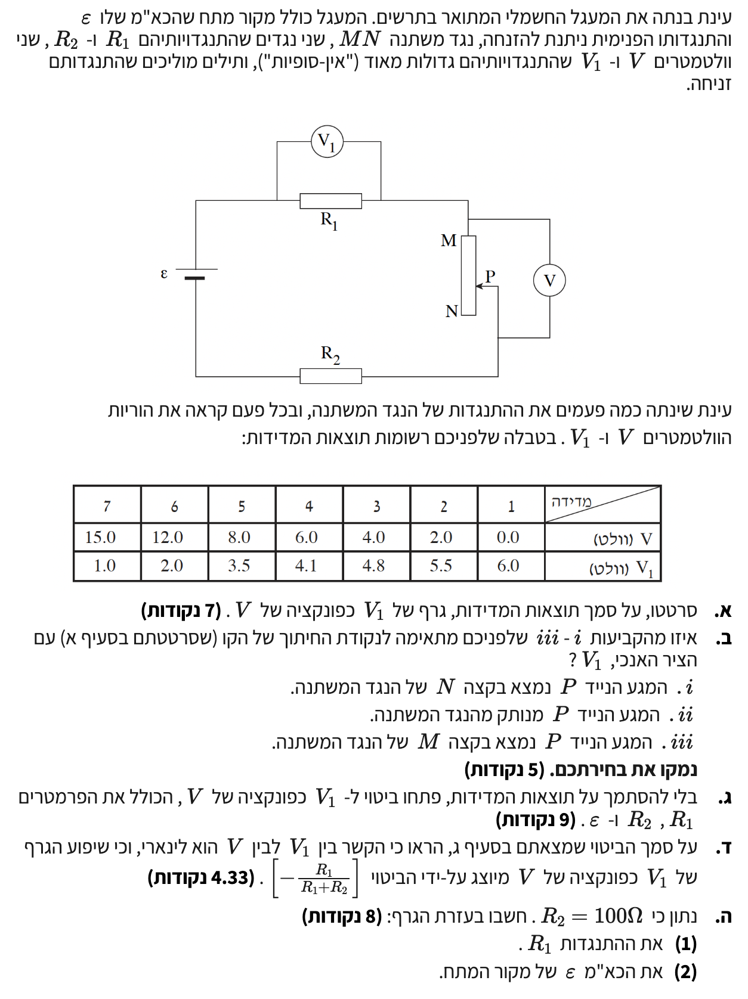
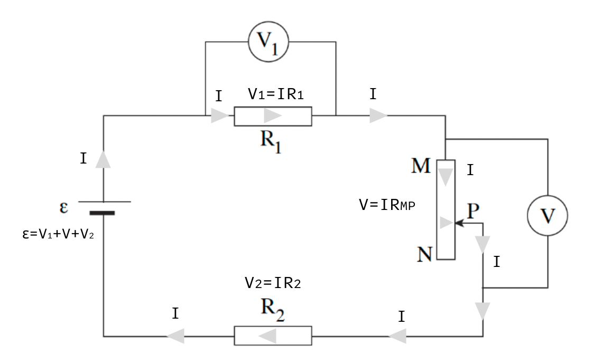

פתרון מוסבר לתלמידים, מודרך צעד-אחר-צעד ברמת 5 יח"ל

טבלת מדידות המתארת את התלות בין קריאת מד המתח \(V_1\) לקריאת מד המתח \(V\). כל המדידות נתונות ביחידות וולט (מערכת MKS), ולכן אין צורך בהמרת יחידות.
לסרטט גרף פיזור של המתח \(V_1\) (על הציר האנכי) כפונקציה של המתח \(V\) (על הציר האופקי), ולהעביר קו מגמה דרך הנקודות.
נציב את כל שבע הנקודות מתוך הטבלה במערכת הצירים ונעביר קו ישר (קו מגמה) המייצג את המגמה הממוצעת בצורה המדויקת ביותר:
מסקנה: הגרף המוצג מתאר את המגמה הלינארית המתקבלת מהנקודות.
נקודת החיתוך של הגרף מסעיף א' עם הציר האנכי (\(V_1\)). בנקודה זו ערכו של משתנה הציר האופקי הוא אפס, כלומר \(V = 0\).
לקבוע איזו מהאפשרויות \(i\), \(ii\), או \(iii\) מתאימה למצב שבו קריאת מד המתח \(V\) מתאפסת, ולנמק זאת.
מד המתח \(V\) מחובר במקביל לחלק הפעיל של הנגד המשתנה - מהנקודה \(M\) ועד למגע הנייד \(P\). נסמן את התנגדות הקטע הזה ב-\(R_{MP}\).
על פי חוק אוהם, נוכל לבטא את המתח הנמדד כמכפלת הזרם בהתנגדות קטע זה:
מכיוון שאנו רואים בגרף שבאותו רגע יש מתח \(V_1 = 6.0\text{ V}\), הרי שזורם זרם במעגל (\(I \neq 0\)).
הדרך היחידה שבה המכפלה תתאפס (\(V = 0\)) למרות שיש זרם במעגל, היא אם ההתנגדות עצמה תתאפס (\(R_{MP} = 0\)).
התנגדות אפס בין הנקודה \(M\) למגע \(P\) משמעותה שהמגע \(P\) נוגע פיזית בדיוק בנקודה \(M\). במצב זה הזרם לא עובר דרך שום חלק של החוט ההתנגדותי של הנגד המשתנה אלא מדלג מיד החוצה.
הקביעה הנכונה היא: iii המגע הנייד P נמצא בקצה M של הנגד המשתנה.
מעגל חשמלי הכולל מקור מתח שהכא"מ שלו \(\epsilon\) והתנגדותו הפנימית זניחה (\(r = 0\)). נגדים קבועים \(R_1, R_2\) ונגד משתנה. שני מדי מתח \(V_1\) ו-\(V\).
ביטוי אלגברי של \(V_1\) כפונקציה של \(V\), הכולל רק את פרמטרי המעגל הקבועים: \(R_1\), \(R_2\) ו-\(\epsilon\).
לצורך בהירות, נצייר תרשים מעגל שקול פשוט של הלולאה המרכזית. נסמן את התנגדות הנגד המשתנה הפעיל באות \(R_x\) (החלק מ-M עד P).

שלושת הנגדים מחוברים בטור ולכן אותו זרם \(I\) זורם דרכם (על פי הכלל שההתנגדות השקולה היא סכום ההתנגדויות). נשתמש בחוק אוהם על הנגד \(R_1\) כדי לבטא את הזרם במעגל:
כמו כן, המתח \(V\) על הנגד המשתנה נתון על פי מכפלת הזרם בהתנגדות הקטע:
על פי כלל הלולאה של קירכהוף (חוק שימור האנרגיה במעגל סגור), סכום הכא"מ בלולאה שווה לסכום מפלי המתח על הנגדים:
נשים לב שהביטויים \(I \cdot R_1\) ו- \(I \cdot R_x\) הם בדיוק קריאות מדי המתח \(V_1\) ו-\(V\) בהתאמה:
כעת, נציב את הביטוי שמצאנו לזרם \(I\) לתוך המשוואה:
המטרה שלנו היא לבודד את \(V_1\), לכן נוציא אותו כגורם משותף באיברים המכילים אותו:
נכנה משותף בתוך הסוגריים:
נבודד את \(V_1\) על ידי כפל בהופכי של השבר:
נפתח את הסוגריים כדי לקבל ביטוי מפורש לאיברים (שיעזור לנו מאוד בסעיף הבא!):
הביטוי האלגברי המבוקש: \[ V_1 = -\left(\frac{R_1}{R_1 + R_2}\right) \cdot V + \left(\frac{R_1}{R_1 + R_2}\right) \cdot \epsilon \]
כשאתם מפתחים משוואה אלגברית ארוכה, תמיד כדאי לעצור ולשאול: האם המשוואה הזו הגיונית פיזיקלית?
בואו נראה איך המערכת מתנהגת בפועל כאשר מזיזים את המגע הנייד \(P\) ומגדילים את התנגדות הנגד המשתנה \(R_x\):
החיבור לגרף: הנה ההסבר הפיזיקלי המושלם לגרף שסרטטנו בסעיף א' – ככל שהמתח \(V\) גדל, המתח \(V_1\) חייב לקטון! זה בדיוק מה שיוצר את השיפוע השלילי שראינו בניסוי.
הביטוי התיאורטי שפיתחנו בסעיף ג': \( V_1 = -\left(\frac{R_1}{R_1 + R_2}\right) \cdot V + \left(\frac{R_1}{R_1 + R_2}\right) \cdot \epsilon \)
להראות על סמך הביטוי שהקשר הוא לינארי (מתאר קו ישר) ולהוכיח שהשיפוע הוא הביטוי הנתון \([-\frac{R_1}{R_1+R_2}]\).
נשווה את הביטוי הפיזיקלי שמצאנו לתבנית המתמטית הכללית של קו ישר מהצורה \(y = m \cdot x + b\), כאשר נזכור ש-\(V_1\) מיוצג על ציר ה-y ו-\(V\) מיוצג על ציר ה-x בגרף שסרטטנו:
מכיוון שההתנגדויות \(R_1\) ו-\(R_2\) וכא"מ המקור \(\epsilon\) הם גדלים קבועים שאינם משתנים במהלך הניסוי, גם המקדמים המורכבים מהם הם בהכרח קבועים. כלומר: השיפוע \(m\) הוא קבוע והאיבר החופשי \(b\) (נקודת החיתוך) הוא קבוע.
משוואה שבה משתנה אחד תלוי במשתנה שני בחזקה ראשונה בתוספת קבועים, מתארת בהכרח קשר לינארי (קו ישר).
מתוך ההשוואה לתבנית, ניתן לזהות בבירור כי הגורם המכפיל את המשתנה הבלתי תלוי (\(V\)) הוא השיפוע המבוקש:
הוכחה: הקשר לינארי ושיפועו הוא \( m = -\frac{R_1}{R_1 + R_2} \).
ההתנגדות של הנגד \(R_2\) היא \(100\ \Omega\). בנוסף, ברשותנו הגרף מסרטוט א' והביטויים התיאורטיים לשיפוע ולנקודת החיתוך מסעיף ד'.
לחשב באמצעות הגרף את ההתנגדות \(R_1\) ואת הכא"מ \(\epsilon\) של המקור.
נחשב את שיפוע הגרף בעזרת שתי נקודות שבחרנו, אשר מתיישבות היטב על קו המגמה. נבחר את הנקודות \((6.0, 4.1)\) ו-\( (15.0, 1.0) \) ונציב בנוסחה לחישוב שיפוע \(m = \frac{y_2 - y_1}{x_2 - x_1}\):
נשווה את השיפוע הניסויי לביטוי התיאורטי של השיפוע שמצאנו בסעיף ד':
נציב את הנתון \(R_2 = 100\ \Omega\) ונכפול בהצלבה:
כדי למצוא את הכא"מ, עלינו למצוא תחילה את נקודת החיתוך של קו המגמה עם ציר ה-y (האיבר החופשי \(b\)). נשתמש בשיפוע שמצאנו ובאחת הנקודות, למשל \((15.0, 1.0)\):
נשווה את הערך הניסויי הזה לביטוי התיאורטי של נקודת החיתוך (\(b\)) מסעיף ד':
הביטוי שבסוגריים הוא בדיוק הגודל של השיפוע (ללא המינוס), כלומר \(\frac{3.1}{9.0}\). נציב זאת במשוואה:
תוצאות סופיות: (1) \( R_1 = 52.5\ \Omega \) וכן (2) \( \epsilon = 17.9\text{ V} \).